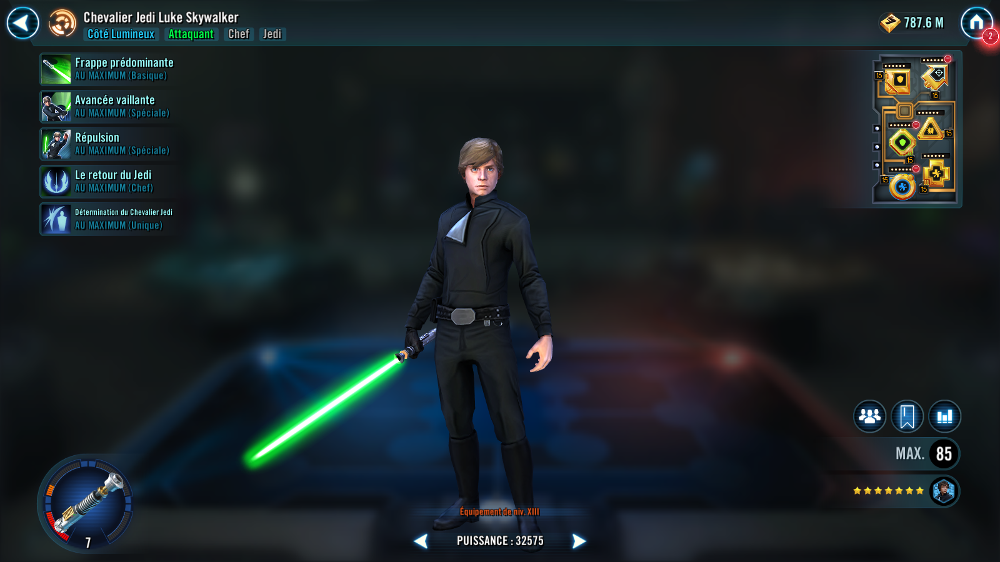

Jedi Knight Luke Skywalker
Stalwart Jedi hero of legend who ascends to victorious heights alongside his Jedi allies through the will of the Force
Stalwart Jedi hero of legend who ascends to victorious heights alongside his Jedi allies through the will of the Force

Dispel all buffs and deal Physical damage to target enemy. If they are a Tank, also deal true damage to them (excludes raid bosses and Galactic Legends). Then reduce their critical damage by 10% (stacking). Jedi Knight Luke Skywalker gains 10% Max Protection (stacking, max 100%) until the end of the encounter. This attack can't be countered.
Deal Physical damage to target enemy and call another target ally to assist. Inflict Blind on target enemy for 2 turns.
Jedi Knight Luke Skywalker gains Jedi's Will for 2 turns, which can't be copied, dispelled, or prevented. If target other ally is a Jedi, who is not Old Republic, they also gain Jedi's Will for 2 turns.
Jedi's Will: +100% Counter Chance, +50% Offense, +25% Speed, +25% Tenacity
Inflict Stun for 1 turn and Vulnerable for 2 turns on all enemies. Until end of encounter, all enemies lose 10% Max Health and Protection (stacking, max 50%).
Repulse on raid bosses and Galactic Legends: Deal Physical damage to target enemy three times and inflict Vulnerable for 2 turns.
This ability can't be evaded or resisted.

All Light Side allies have +15% Critical Chance and Critical Damage, doubled for Jedi allies.
At the start of each of Jedi Knight Luke Skywalker's turns, all enemies are reduced to his base Speed until the end of the encounter, and their base Speed can't be increased after their Speed is limited this way (his base value is recorded at the start of the encounter before any buffs or debuffs are applied). This Speed limitation does not affect raid bosses, and it does not activate if Luke has less than 40 Stamina in a Conquest battle or the enemy side has a Speed limiting ability or a Galactic Legend.
At the start of encounter, all Jedi allies (excluding Old Republic Jedi) gain the granted ability Heroes Arise.
Heroes Arise: Dispel all debuffs on all allies, then call all Jedi allies to assist, dealing 20% less damage. All Jedi allies (excluding Old Republic Jedi) recover 25% Health and Protection and gain Jedi's Will for 2 turns. Then Jedi Knight Luke Skywalker is granted 100% Turn Meter.
This ability is on a shared cooldown between allies who have Heroes Arise and is immune to cooldown manipulation (Cooldown: 10).
Dispel all debuffs on all allies then call all Jedi allies to assist, dealing 20% less damage. All Jedi allies (excluding Old Republic Jedi) recover 25% Health and Protection and gain Jedi's Will for 2 turns. Then Jedi Knight Luke Skywalker gains 100% Turn Meter.
This ability is on a shared cooldown between allies who have Heroes Arise and is immune to cooldown manipulation.
Each time Jedi Knight Luke Skywalker is damaged, he gains 5% Turn Meter and 5% Offense (stacking, max 25%) until he uses Prevailing Strike on his turn.
When he attacks out of turn or is critically hit, he gains 2 Speed (stacking, max 20) until end of encounter.
At the end of each other Jedi ally's turn (excluding Old Republic Jedi), Jedi Knight Luke Skywalker gains 10% Turn Meter.
Jedi Knight Luke Skywalker is immune to Stun and Fear.